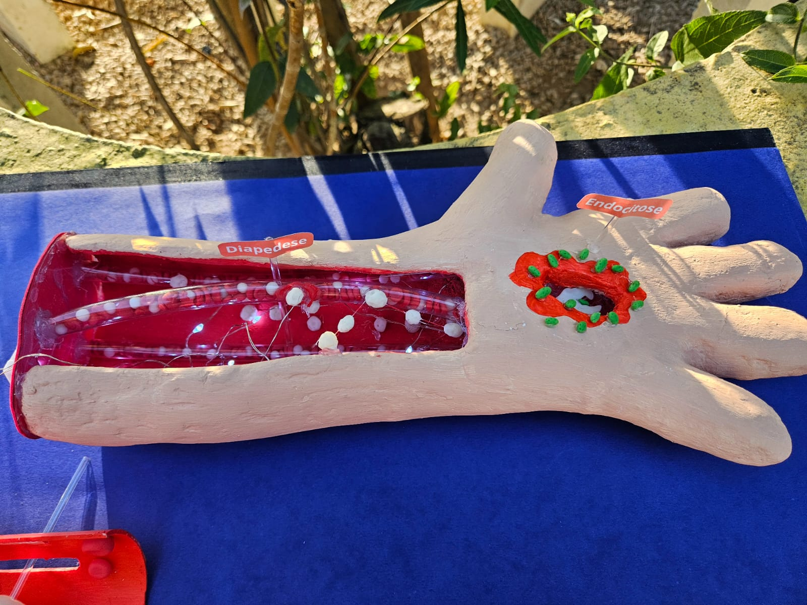

Diapedese
A diapedese é um processo fundamental no sistema imunológico, que permite que os leucócitos saiam dos vasos sanguíneos e migrem para os tecidos onde são necessários. Esse fenômeno é essencial para a defesa do organismo contra agentes patogênicos e para a resolução de processos inflamatórios. A diapedese ocorre em resposta a sinais químicos liberados por células lesionadas ou por agentes infecciosos, e envolve uma série de etapas complexas que garantem a eficácia da resposta imune. A diapedese é um processo complexo que envolve várias etapas coordenadas para garantir a migração eficaz dos leucócitos para os tecidos.
Etapas
- Rolamento (selectinas)
- Ativação (quimiocinas)
- Aderência firme (integrinas)
- Transmigração (diapedese)
